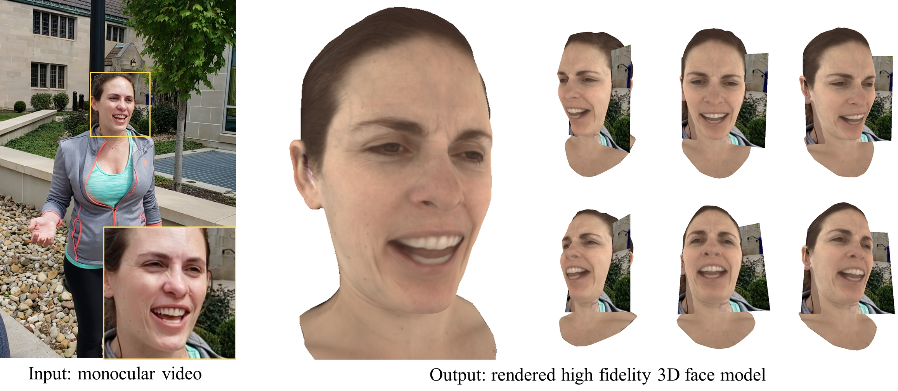

Self-Supervised Adaptation of High-Fidelity Face Models for Monocular Performance Tracking
Jae Shin Yoon1, Takaaki Shiratori2, Shoou-I Yu2, and Hyun Soo Park1
1University of Minnesota 2Facebook Reality Labs, Pittsburgh

Figure 1: We present a method to render a high-fidelity 3D face model from an unconstrained monocular video.
Abstract
Improvements in data-capture and face modeling techniques have enabled us to create high-fidelity realistic face models. However, driving these realistic face models requires special input data, e.g., 3D meshes and unwrapped textures. Also, these face models expect clean input data taken under controlled lab environments, which is very different from data collected in the wild. All these constraints make it challenging to use the high-fidelity models in tracking for commodity cameras. In this paper, we propose a self-supervised domain adaptation approach to enable the animation of high-fidelity face models from a commodity camera. Our approach first circumvents the requirement for special input data by training a new network that can directly drive a face model just from a single 2D image. Then, we overcome the domain mismatch between lab and uncontrolled environments by performing self-supervised domain adaptation based on "consecutive frame texture consistency" based on the assumption that the appearance of the face is consistent over consecutive frames, avoiding the necessity of modeling the new environment such as lighting or background. Experiments show that we are able to drive a high-fidelity face model to perform complex facial motion from a cellphone camera without requiring any labeled data from the new domain.


Figure 2: Facial performance tracking from a monocular video.


Figure 3: Facial performance tracking with headpose and multiview rendering.
Jae Shin Yoon, Takaaki Shiratori, Shoou-I Yu, and Hyun Soo Park "Self-Supervised Adaptation of High-Fidelity Face Models for Monocular Performance Tracking", CVPR 2019 (Oral presentation) [PDF, PDF_supplementary, Poster, Bibtex]
Video (oral presentation)
Video (oral presentation with voice)
Supplementary video